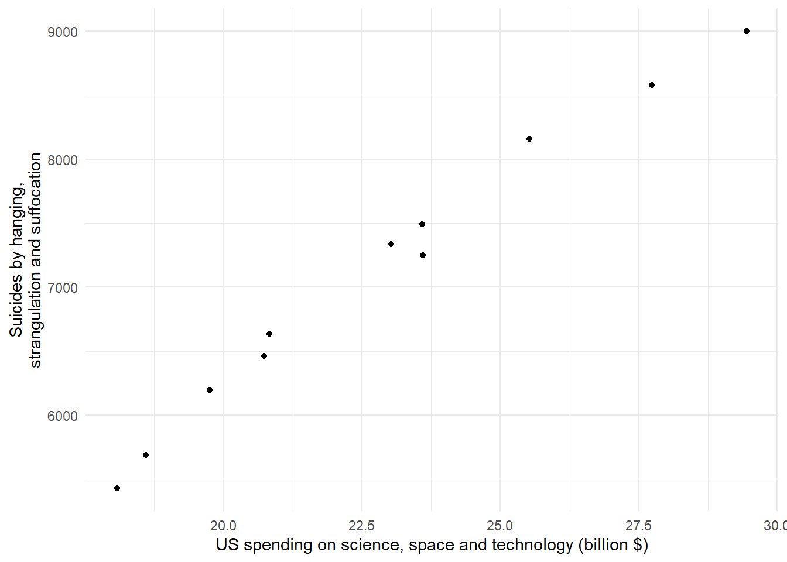
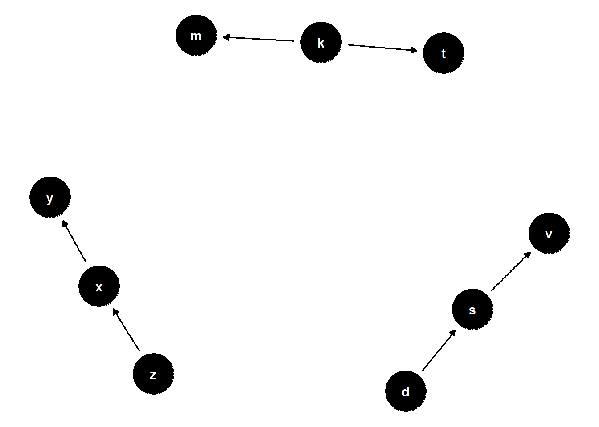
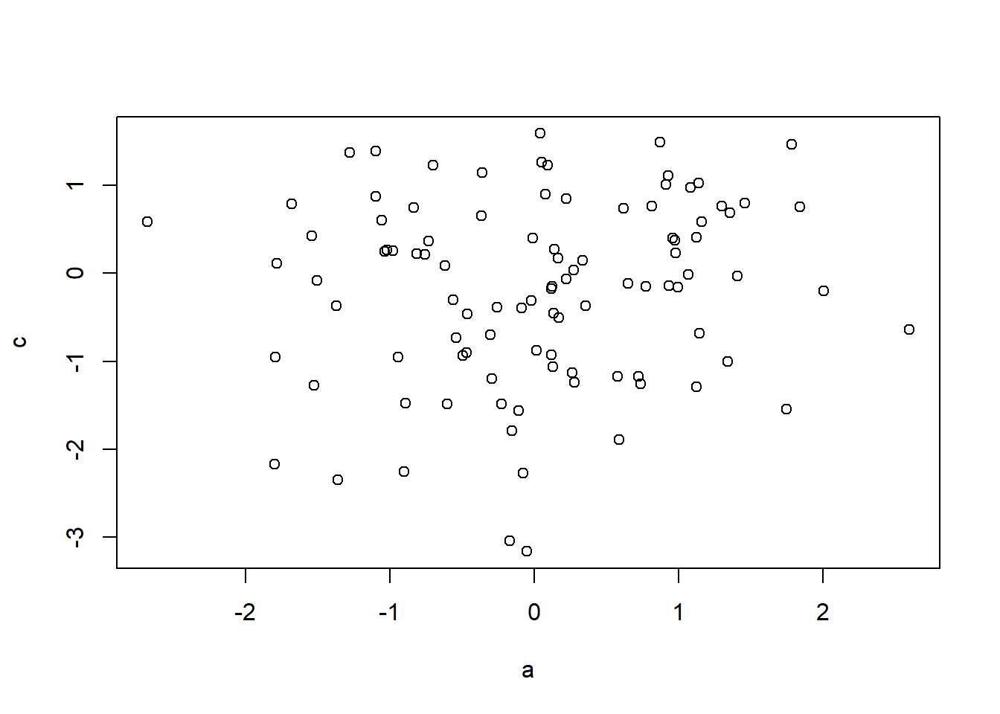
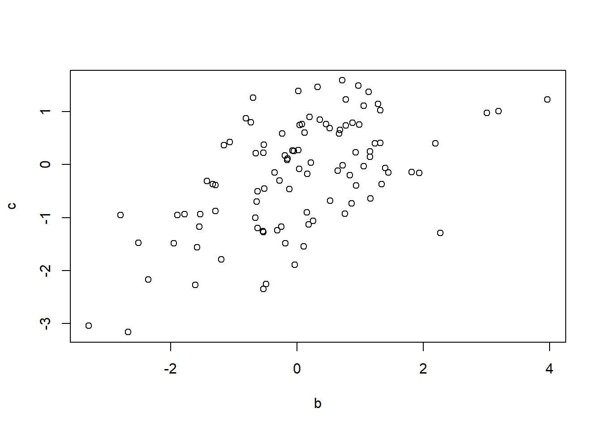

Associations and causation
We have previously been introduced to a general purpose algorithm for describing associations among variables, the regression model. From a univariate regression model we can also get the correlation coefficient which tells us to which degree two variables are associated on a unit-less scale between -1 and +1.
We can further extend our definition of association by including other types of data variables in our discussion. A discrete variable, such as sex, may be associated with body weight. We could assess this by examining the average body weight among males and females. Sex could also be associated with the prevalence of Anterior Cruciate Ligament (ACL) Injuries. We could assess this by looking at the occurrence of injuries (injured/not injured) among males and females. This would be an investigation of association between two discrete variables. Similarly, discrete variables with more than two levels can be analyzed for association with other discrete or continuous variables.
However, we must be aware, as association does not imply causation. Assuming that a variable is causally associated with another variable may guide us in making decision. For example, decisions on how we should organize our society, or our everyday life. If assuming causality from association USA should decrees funding of science, space and technology as this is highly, and positively correlated with suicides by hanging, strangling and suffocation (Figure 1)1. Decreasing science funding would lead to less suicides by hanging, if these phenomena were causally associated. They are likely not.
Drawing a scientific model using Directed Acyclic Graphs
Using Directed Acyclic Graphs (DAGs) we can describe causal assumptions of a system that we are investigating. DAGs can be used to describe nonparametric causal relationships. The graph consists of nodes and arrows (or edges). Each node encodes a variable and arrows shows the direction of the causal effect. Figure 2 shows three possibilities

From
Chains
Forks
Inverted forks
Confounding
Collider bias
Overcontrol bias
Descendants
Ancestors
Back-door paths
Post-treatment variables
Causality and randomized experiments
a <- rnorm(100, 0, 1)
c <- rnorm(100, 0, 1)
b <- a*0.5 + c*0.5 + rnorm(100, 0, 1)
summary(lm(a ~ c + b))
Call:
lm(formula = a ~ c + b)
Residuals:
Min 1Q Median 3Q Max
-2.46119 -0.52335 0.04971 0.54387 2.03397
Coefficients:
Estimate Std. Error t value Pr(>|t|)
(Intercept) -0.02051 0.09250 -0.222 0.825
c -0.16879 0.10440 -1.617 0.109
b 0.40931 0.08623 4.747 7.13e-06 ***
---
Signif. codes: 0 '***' 0.001 '**' 0.01 '*' 0.05 '.' 0.1 ' ' 1
Residual standard error: 0.8945 on 97 degrees of freedom
Multiple R-squared: 0.1999, Adjusted R-squared: 0.1834
F-statistic: 12.11 on 2 and 97 DF, p-value: 2.012e-05plot(a,c)
plot(b,c)